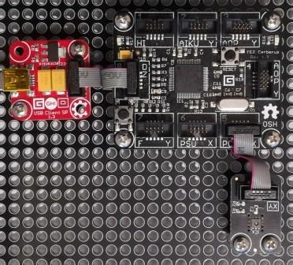

Version: 0.7.0
TempHumid is connected as followed on Cerberus:

| TempHumid | Mainboard |
|---|---|
| Socket Type X or Y | Socket 5 |
using System.Diagnostics;
using System.Threading;
using Bauland.Gadgeteer;
using GHIElectronics.TinyCLR.Pins;
namespace TestTempHumid
{
static class Program
{
static void Main()
{
// TempHumid connected on Socket 5 (Type X or Y) of FEZ Cerberus mainboard.
TempHumidity tempHumidity=new TempHumidity(FEZCerberus.GpioPin.Socket5.Pin4,FEZCerberus.GpioPin.Socket5.Pin5);
tempHumidity.MeasurementComplete += TempHumidity_MeasurementComplete;
tempHumidity.MeasurementInterval = 1000;
tempHumidity.StartTakingMeasurements();
while (true)
{
Thread.Sleep(20);
}
}
private static void TempHumidity_MeasurementComplete(TempHumidity sender, TempHumidity.MeasurementCompleteEventArgs e)
{
Debug.WriteLine("Temperature: "+e.Temperature.ToString("F1")+"�C, Humidity: "+e.RelativeHumidity.ToString("F1")+"%");
}
}
}